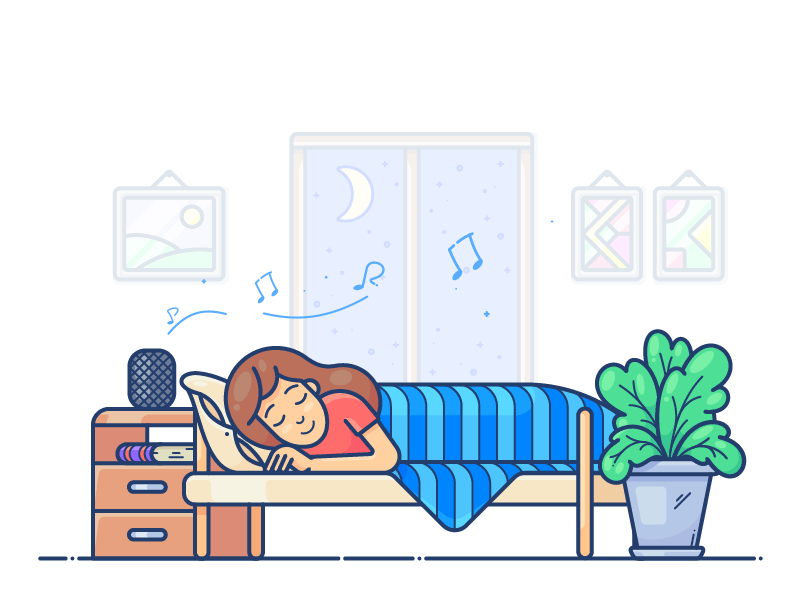
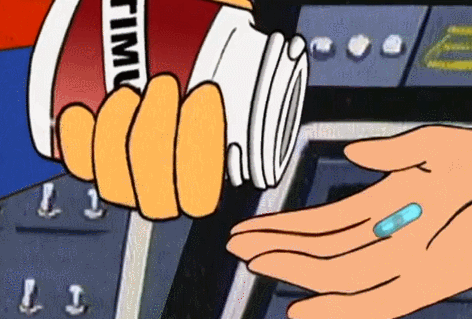

<html>

<head>
<title> MY FOURTH WEB PAGE </title>
</head>

<body bgcolor=khaki

</body>
</html>

<center> <h1> <font color=black size=20 face="Times New Roman">Wellness Tips for a Healthy Lifestyle </h1> <center>

<center> 

	<header>
        <h1><font color=black size=5  face="Times New Roman"> 1.Start your day with a glass of water.
Your body goes quite a few hours without hydration as you sleep. Drinking a full glass of water in the morning can aid digestion, flush out toxins, enhance skin health and give you an energy boost.</h1>


<header>
        <h1><font color=black size=5  face="Times New Roman"> 2.Begin with something positive.
Wake up and do something that inspires you like journaling, walking in nature, or other hobbies. Whether it’s productive or relaxing, beginning your morning on the right foot can cultivate a positive mindset and set the tone for the entire day.</h1>


	<header>
        <h1><font color=black size=5  face="Times New Roman"> 3.Get plenty of sleep.
Sleep is just as important as eating healthy and exercising. From improving your productivity and concentration to helping support your overall health, getting the recommended hours of sleep per night can have a major impact on your wellbeing.</h1>



<header>
        <h1><font color=black size=5  face="Times New Roman"> 4.Get moving throughout the day.
Try the stairs instead of the elevator, take short walks around your office or ride a bike instead of driving. Vigorous exercise is essential but moving throughout the day will keep you energized, as well as benefit your mind and body.</h1>


	<header>
        <h1><font color=black size=5  face="Times New Roman"> 5.Give your eyes a rest.
Eyes become easily strained when you’re constantly focused on your computer screen. Reduce the risk of tired eyes by looking away from your computer for at least 20 seconds in 20-minute intervals.</h1>


	<header>
        <h1><font color=black size=5  face="Times New Roman"> 6.Eat real food.
Real food is whole, single-ingredient foods that are unprocessed and free of additives. Incorporating these foods into your day can help improve your health, manage your weight and give you energy.</h1>


	<header>
        <h1><font color=black size=5  face="Times New Roman"> 7.Take your vitamins.
Multivitamins contain vitamins and minerals that are essential to your health. No matter how healthy you eat or what diet you follow, it can be difficult for your body to get all of the nutrients it needs from food. Research your options and find a multivitamin that fits your needs and supports your health.</h1>



	<header>
        <h1><font color=black size=5  face="Times New Roman"> 8.Make time for your friends and family.
Spending time with your friends and family may not seem like a top wellness tip but it is vital. Humans are social beings and rely on other humans to maintain their mental, emotional and physical help. Setting time aside to spend with your loved ones can help relieve stress, increase self-esteem and lead you to make more positive choices.</h1>


<header>
        <h1><font color=black size=5  face="Times New Roman"> 9.Manage your money.
Money worries are oftentimes a big source of stress for some people. Saving for the future, home mortgages and paying off loans—it all adds up. Create a priority list for yourself and determine a realistic budget to provide yourself some relief.</h1>


	<header>
        <h1><font color=black size=5  face="Times New Roman"> 10.Practice gratitude.
Oftentimes, we tend to focus on what we’re lacking in life instead of focusing on the things that we do have. Start measuring your worth by your successes rather than your deficits by keeping track of the things that go well in your life.</h1>


<p>
<center><table border=1 bgcolor=pink width=10%
<tr>
<td><a href="file:///C:/Users/63916/Documents/HTMLfiles/last%20page.html">center>BACK TO TOP></center></a></td></table></tr></center>

</p>
</body>
</html>
